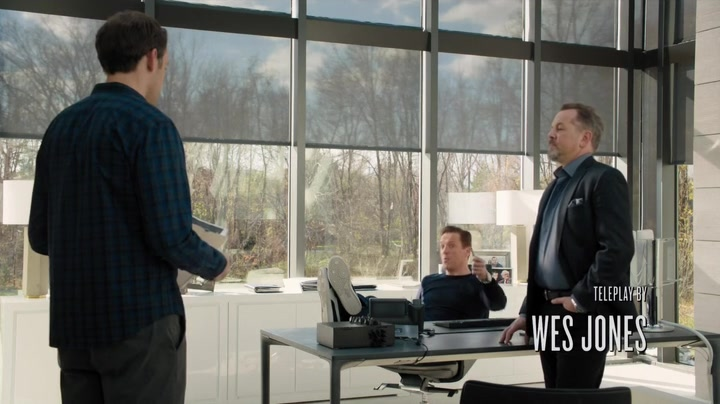

01
Axe Capital / 公告前后
他拒绝退出，因为大家都认为应该退出

剧情事实Biolance 的药品审批即将公布。Mafee 建议减仓，锁定约一成利润，避免可能四亿美元的损失；阿克斯拒绝并将他解雇。FDA 随后不批准药品，股票停牌，损失还可能扩大；阿克斯留下 Mafee，承认自己犯了错。[1][2]
这一场为什么重要 · 个人解读
正确的异议在这一刻被老板当成对自身能力的挑战。不是信息不存在，而是“所有人都不同意”激发了他证明自己能改变结果的冲动。留下 Mafee 修正了用人错误，却没有解释为何坚持交易。他因此需要的帮助不只是再来一条市场信息，而是重新理解自己的决定。
因此 → 市场损失把他送回温迪面前。